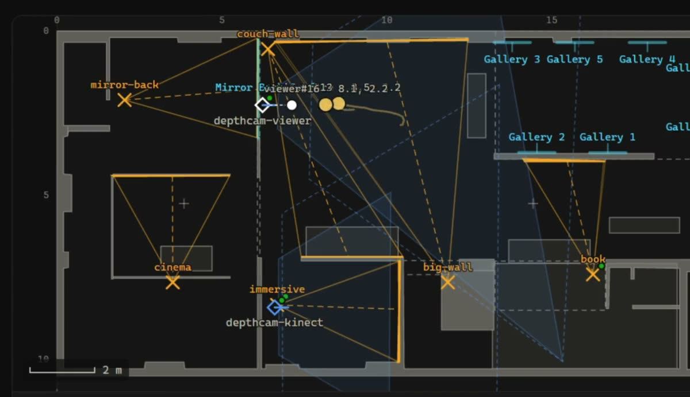
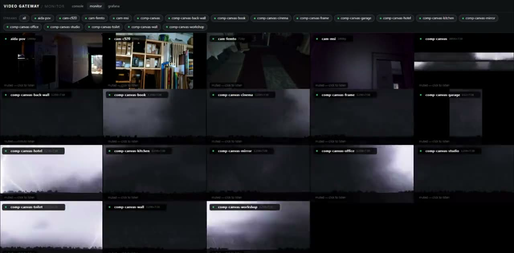

Prepared for Glitch · RnA Studio, Lisbon
Sentient
Studio.
A room that senses, thinks
and answers back.
01 / The idea
The room is
the interface.
Move, look, touch. The studio reads what happens, turns it into a response, and changes the space around you. Every installation becomes part of the same conversation.

It notices you.
Depth cameras turn movement into positions and events on a live floorplan. A pull of the photobooth lever becomes another signal the room can answer.
Live floorplan · 204.ai · October 2026 · Silent recording02 / The space
Six places.
One organism.
Mirrors, walls, frames and objects share the same system. Choose a space to see it up close.


A distributed gallery
Art gallery
Eight networked art frames can change together with the show, turning individual works into one environment.
Photo: RnA Studio, Lisbon03 / The system
One experience.
Across the room.
Studio-manager coordinates the sensors, engines and surfaces. A single canvas is divided between projectors, mirrors and frames, so each part of the room plays its role.
System snapshot, October 2026. Engines: FluxRT, StreamDiffusion and ComfyUI.

One canvas, played across multiple surfaces · 204.ai · Silent recording

04 / A story to build toward
The room
remembers you.
The AI Escape Room imagines these spaces as one story: the gallery holds a cipher, the mirror asks for a gesture, the photobooth gives you a clue.
Its game master, the Archivist, would guide a group through the studio. The rooms exist today; the game is a concept in development.
Open the presentation ↗Glitch / Studio study